수능(국어영역) (2015-07-09 기출문제)
1. 위 내용을 바탕으로 교지의 기사를 작성하기 위해 나눈 대화로 적절하지 않은 것은?(1번 공통지문 문제)
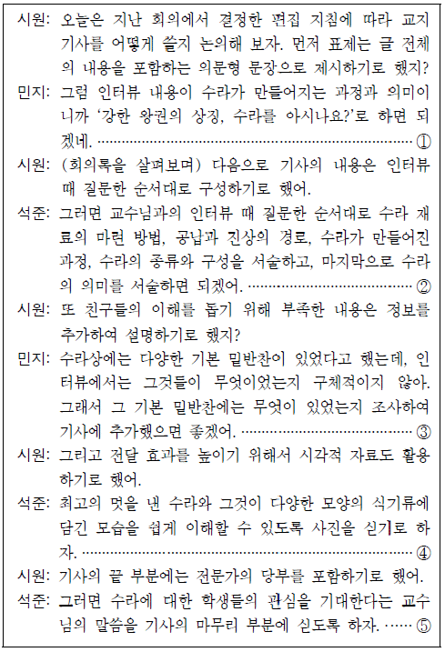
- ①
- ②
- ③
- ④
- ⑤
(정답률: 알수없음)

2. 학생의 발표 전략 중, (나)에 반영되지 않은 것은?(3번 공통지문 문제)
- 청자의 이해를 돕기 위해 익숙하지 않은 용어의 개념을 풀이해야겠어.
- 발표 내용을 효과적으로 전달하기 위해 고사성어를 활용해야겠어.
- 발표 내용의 신뢰성을 높이기 위해 전문가의 견해를 인용해야겠어.
- 발표 내용을 강조하기 위해 반언어적 표현을 사용해야겠어.
- 청자의 동의를 유도하기 위해 질문을 던지는 방식으로 발표를 마무리해야겠어.
(정답률: 알수없음)
3. 다음은 (나)를 들은 후 다른 학생이 보인 반응이다. (나)를 고려하여 학생의 반응을 분석한 것으로 적절하지 않은 것은? [3점](3번 공통지문 문제)
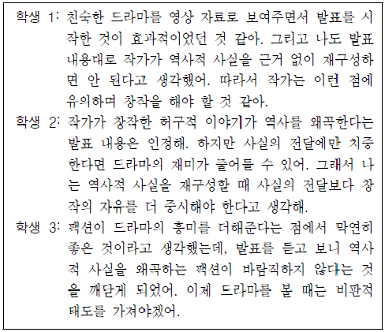
- 학생 1은 발표를 시작하는 방식에 대해 긍정적으로 평가하고 있군.
- 학생 2는 발표 내용에 대해 비판적 태도를 취하지만 일부 내용은 수용하고 있군.
- 학생 3은 발표 내용을 듣고 생각의 변화를 경험하고 있군.
- 학생 1과 학생 2는 역사적 사실의 전달보다 창작의 자유가 중요하다는 발표 내용에 공감하고 있군.
- 학생 2와 학생 3은 모두 팩션이 역사적 사실을 왜곡한다는 발표 내용에 동의하고 있군.
(정답률: 알수없음)
4. <보기>는 (가)를 바탕으로 세운 글쓰기 계획이다. (나)에 반영되지 않은 것은?(6번 공통지문 문제)
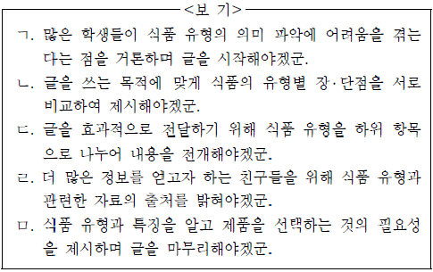
- ㄱ
- ㄴ
- ㄷ
- ㄹ
- ㅁ
(정답률: 알수없음)
5. ㉠～㉤을 고쳐 쓰기 위한 방안으로 적절하지 않은 것은?(6번 공통지문 문제)
- ㉠은 문맥상 부적절한 단어이므로 ‘표시’로 고친다.
- ㉡은 조사의 사용이 잘못되었으므로 ‘대부분의’로 고친다.
- ㉢은 문장의 연결 관계를 고려하여 ‘따라서’로 고친다.
- ㉣은 이중 피동이 사용되었으므로 ‘규정되어’로 고친다.
- ㉤은 의미가 중복되므로 ‘고시하여 게시하는데’로 고친다.
(정답률: 알수없음)
6. 다음은 공통지문의 네모친 “학생 2의 작문 과제”를 수행한 ‘학생 2’의 글이다. ㉠～㉤ 중, 반영되지 않은 것은?(9번 공통지문 문제)
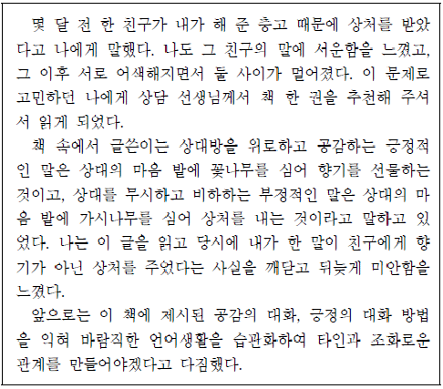
- ㉠
- ㉡
- ㉢
- ㉣
- ㉤
(정답률: 알수없음)
7. 다음 ㄱ∼ㄷ의 음운 변동에 대한 설명으로 적절하지 않은 것은?
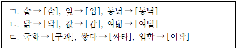
- ㄱ은 음절의 끝에서 한 음운이 다른 음운으로 바뀌는 현상으로, ㄱ의 예로 ‘꽃→ [꼳]’을 추가할 수 있다.
- ㄴ은 음절의 끝에 두 개의 자음이 올 때 이 중에서 한 자음이 없어지는 현상으로, ㄴ의 예로 ‘넋 →[넉]’을 추가할 수 있다.
- ㄷ은 두 음운이 만나 하나의 음운이 되는 현상으로, ㄷ의 예로 ‘놓지→ [노치]’를 추가할 수 있다.
- ㄱ과 ㄷ의 변동이 모두 일어난 예로는 ‘첫해→[처태]’를 들 수 있다.
- ㄴ과 ㄷ의 변동이 모두 일어난 예로는 ‘핥다→[할따]’를 들 수 있다.
(정답률: 알수없음)
8. <보기 1>을 바탕으로 ㉠과 품사가 같은 것만을 <보기 2>에서 고른 것은?
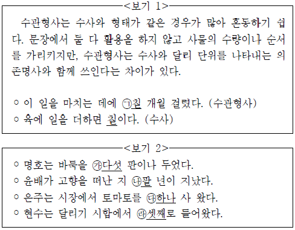
- ㉮, ㉯
- ㉮, ㉰
- ㉯, ㉰
- ㉯, ㉱
- ㉰, ㉱
(정답률: 알수없음)
9. 다음 ㄱ∼ㄹ의 문장 성분과 문장 구조에 대한 설명으로 옳지 않은 것은? [3점]
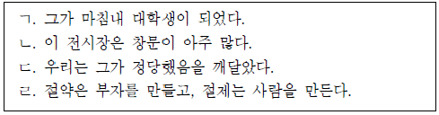
- ㄱ은 보어가 있고, ㄷ은 보어가 없다.
- ㄴ은 목적어가 없고, ㄹ은 목적어가 있다.
- ㄱ과 ㄴ은 부사어가 있고, ㄷ과 ㄹ은 부사어가 없다.
- ㄱ과 ㄴ은 주어와 서술어의 관계가 한 번만 나타나고, ㄷ과 ㄹ은 두 번 이상 나타난다.
- ㄷ은 절이 전체 문장 속에 안겨 있고, ㄹ은 두 개의 절이 대등한 관계로 이어져 있다.
(정답률: 알수없음)
10. <보기>는 국어사전의 일부이다. 이를 탐구한 것으로 적절하지 않은 것은?
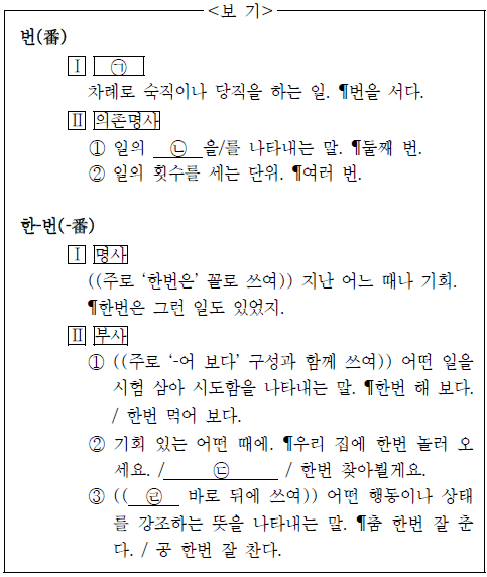
- ㉠, ㉣에 들어갈 말은 모두 ‘명사’이겠군.
- ㉡에 들어갈 말은 ‘차례’이겠군
- ㉢에는 ‘시간 날 때 낚시나 한번 갑시다.’를 넣을 수 있겠군.
- ‘한번
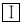
’과 달리 ‘한번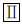
’는 문장에서 자립하여 쓰일 수 없겠군. - ‘난 제주도에 한 번 가 봤어.’에서 ‘번’은 ‘번
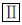
-②’의 뜻으로 쓰였겠군.
(정답률: 알수없음)
11. 다음은 잘못된 문장 표현을 고쳐 쓴 것이다. 적절하지 않은 것은?
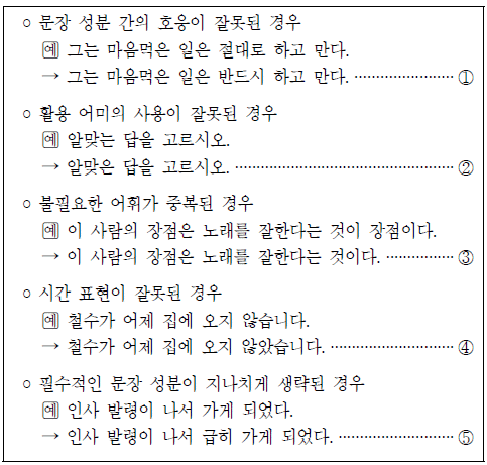
- ①
- ②
- ③
- ④
- ⑤
(정답률: 알수없음)
12. <보기>를 활용하여 윗글을 이해한 내용으로 적절하지 않은 것은? [3점](16번 공통지문 문제)
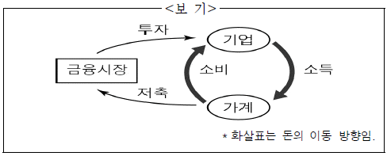
- 고전파 경제학자들은 ‘소득’과 ‘소비’의 경제적 흐름이 수요와 공급의 법칙에 의해 조절된다고 여겼다.
- 고전파 경제학자들은 이자율에 의하여 ‘저축’의 크기와 ‘투자’의 크기가 일치하게 된다고 주장했다.
- 케인스는 ‘투자’의 크기가 이자율뿐만 아니라 그 외의 다양한 요소에 의해 영향을 받는다고 말했다.
- 케인스는 ‘저축’의 크기보다 ‘투자’의 크기가 작은 상황이 발생할 수 있다고 보았다.
- 케인스는 ‘투자’의 크기가 작을수록 경기 침체에서 빨리 벗어날 수 있다고 생각했다.
(정답률: 알수없음)
13. <보기>의 관점에서 ㉠에 대해 보일 반응으로 가장 적절한 것은?(16번 공통지문 문제)
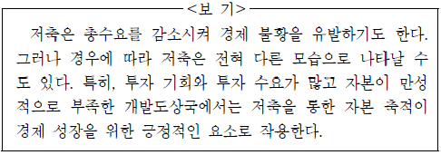
- 다수의 의견임을 내세워 자신의 주장을 강요하고 있군.
- 논리적 근거를 제시하지 않고 감정에만 호소하고 있군.
- 다른 상황이 있을 수 있음을 간과하고 대상을 지나치게 일반화하고 있군.
- 단순히 시간상으로 선후 관계에 있는 것을 인과관계인 것으로 착각하고 있군.
- 자신의 주장을 정당화하기 위해 논지와 관계없는 권위자의 견해에만 의존하고 있군.
(정답률: 알수없음)
14. ⓐ∼ⓔ의 사전적 의미로 적절하지 않은 것은?(16번 공통지문 문제)
- ⓐ: 균형이 맞게 바로잡음.
- ⓑ: 매겨야 할 부담 따위를 덜어 주거나 면제함.
- ⓒ: 주의나 사상을 앞장서서 주장함.
- ⓓ: 여러 사람이 모여 서로 의논함.
- ⓔ: 어떤 상태가 오래 계속됨.
(정답률: 알수없음)
15. <보기>는 [A]를 구조화한 것이다. 이를 통해 윗글을 이해한 내용으로 적절하지 않은 것은? [3점](20번 공통지문 문제)
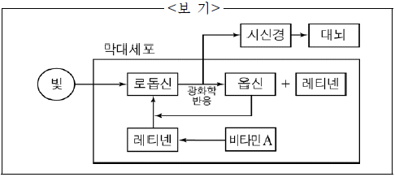
- 로돕신은 약한 빛에도 쉽게 옵신과 레티넨으로 분해된다.
- 대뇌가 빛을 인식하는 시점은 전기적 신호가 생기기 이전이다.
- 옵신과 레티넨의 결합은 어두운 곳에서 일어난다.
- 비타민 A가 부족하면 로돕신의 합성이 원활하게 진행되지 않는다.
- 어두운 곳에서 물체의 형태를 계속 보려면 로돕신의 합성과 분해가 반복되어야 한다.
(정답률: 알수없음)
16. 윗글을 읽은 학생들의 반응으로 적절하지 않은 것은?(20번 공통지문 문제)
- 어두운 곳에 들어가면 양극세포는 막대세포의 기능을 억제하겠군.
- 망막의 감응도는 빛의 밝기에 따라 양극세포에 의해 조절되겠군.
- 원뿔세포에 문제가 있다면 색채를 식별하는 데 어려움이 있겠군.
- 광수용체는 빛 자극을 전기적 신호로 바꾸고, 신경절세포는 이를 시신경에 전달하는 역할을 하는군.
- 어두운 곳에서 밝은 곳으로 나오면, 빛 자극은 ‘원뿔세포→ 양극세포→신경절세포’의 순서를 거쳐 시신경으로 전달되겠군.
(정답률: 알수없음)
17. ㉠의 문맥적 의미와 가장 가까운 것은?(20번 공통지문 문제)
- 몸에 땀이 많이 나서 옷이 젖었다.
- 이제야 광고 효과가 나기 시작했다.
- 신문에 합격자 발표가 나지 않아 걱정이다.
- 따뜻한 남쪽 지방에서 겨울을 나고 돌아왔다.
- 언덕 쪽으로 길이 나면 읍내로 가는 시간이 적게 든다.
(정답률: 알수없음)
18. 다음은 대저울의 원리를 나타낸 그림이다. 윗글과 그림을 관련지어 이해한 <보기>의 내용에서 적절한 것만을 고른 것은?(24번 공통지문 문제)
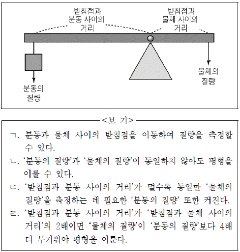
- ㄱ, ㄴ
- ㄱ, ㄷ
- ㄱ, ㄹ
- ㄴ, ㄷ
- ㄴ, ㄹ
(정답률: 알수없음)
19. [가]를 바탕으로 사람이 저울 위에 올라섰을 때 일어나는 현상을 이해하였다. 적절하지 않은 것은?(24번 공통지문 문제)
- B의 길이는 늘어나고 E의 길이는 줄어들겠군.
- D에 작용한 힘이 클수록 E의 길이는 더 늘어나겠군.
- A에 작용한 힘과 D에 작용한 힘은 모두 아래 방향이겠군.
- A에 작용한 힘의 방향과 랙에 작용한 힘의 방향은 서로 다르겠군.
- 측정 가능한 범위라면, 체중이 무거울수록 B의 길이는 더 늘어나겠군.
(정답률: 알수없음)
20. 윗글의 ‘사르트르’의 관점에서 <보기>를 이해한 것으로 적절하지 않은 것은? [3점](27번 공통지문 문제)
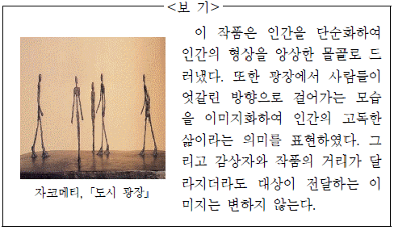
- 작가는 인간의 고독한 삶이라는 의미를 드러내기 위해 상상 세계에서 이미지화했겠군.
- 작가는 나타내고자 했던 이미지를 그대로 전달하기 위해 변화하는 실재 세계를 지각하려고 고민했겠군.
- 작가가 인간을 단순화하여 조각한 것은 현실 세계를 상상이라는 인식 방법을 통해 이미지로 인식했기 때문이겠군.
- 작가가 사람들이 엇갈린 방향으로 걷는 모습을 이미지화하였기 때문에 실재 세계의 속성들과 단절되어 나타나겠군.
- 감상자와 작품의 거리가 달라지더라도 전달하는 이미지가 변하지 않는 것은 작가가 의도한 만큼만 이미지를 구성했기 때문이겠군.
(정답률: 알수없음)
21. 윗글을 통해 ⓐ의 이유를 추론한 것으로 가장 적절한 것은?(27번 공통지문 문제)
- 실재 세계가 상상 세계로 통합되며 나타날 수 있기 때문이다.
- 의식이 지향하는 바에 따라 나누어지는 두 세계가 동시에 인식될 수 없기 때문이다.
- 대상이 주는 인상의 강도 차이에 따라 두 세계가 분명히 구분될 수 있기 때문이다.
- 지각된 대상과 완벽히 일치하는 세계와 지각된 대상과 일치하지 않는 세계가 있기 때문이다.
- 분리된 두 세계는 정신 의식 속에서는 분리되지 않으며, 결국 인과관계로 묶여 있기 때문이다.
(정답률: 알수없음)
22. 문맥상 ㉠～㉤과 바꿔 쓰기에 적절하지 않은 것은?(27번 공통지문 문제)
- ㉠: 표명했다
- ㉡: 의미한다
- ㉢: 간주되어
- ㉣: 변화하면
- ㉤: 피력하지만
(정답률: 알수없음)
23. ㉠과 ㉡을 비교한 내용으로 가장 적절한 것은?(31번 공통지문 문제)
- ㉠은 화자의, ㉡은 ‘나’의 절망감을 표현하고 있다.
- ㉠은 화자의, ㉡은 ‘나’의 성찰적 태도를 드러내고 있다.
- ㉠은 공간적 상황에 의해, ㉡은 현실 상황에 의해 촉발된 감정을 드러내고 있다.
- ㉠은 화자의 과거의 경험에 대한, ㉡은 ‘나’의 현재의 경험에 대한 부정적인 감정을 표현하고 있다.
- ㉠의 화자는 외적인 조건에 의해, ㉡의 ‘나’는 내적인 요인에 의해 현실에 대한 냉소적인 태도를 드러내고 있다.
(정답률: 알수없음)
24. <보기>를 바탕으로 (가), (나)를 감상한 내용으로 적절하지 않은 것은? [3점](31번 공통지문 문제)
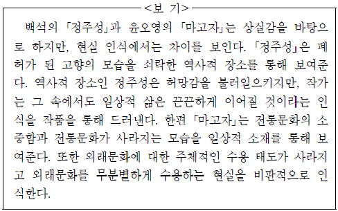
- (가)의 ‘아즈까리 기름의 쪼는 소리가 들리는 듯하다’라는 표현은 고향의 적막감을 강조하고 있군.
- (가)의 ‘청배를 팔러’ 오는 행위는 ‘또’와 연결되면서 허망감 속에서도 일상적인 삶은 끊임없이 이어질 것이라는 점을 보여주고 있군.
- (나)의 ‘송자’와 ‘금석문’은 일상적 소재로, 무분별하게 수용한 외래문화를 나타내고 있군.
- (나)의 ‘그것은 탱자가 아니라 진주였다’라는 표현을 통해 외래문화를 주체적으로 수용했던 상황을 보여주고 있군.
- (가)의 ‘문허진 성(城)터’는 허망함을 자아내고 (나)의 ‘한국 여성의 바느질 솜씨’는 전통의 소중함을 강조하고 있군.
(정답률: 알수없음)
25. ㉠～㉤에 대한 설명으로 적절하지 않은 것은?(34번 공통지문 문제)
- ㉠은 조 의관이 금전적인 판단이 어설프지 않은 인물임을 드러낸다.
- ㉡은 조 의관이 새로운 지출을 하게 될 원인이 된다.
- ㉢은 조 의관이 문중의 신뢰를 회복하기 위해 마련한 최대 금액이다.
- ㉣은 묘막 짓는 일에 문중 사람들이 힘으로라도 보태야 한다는 조 의관의 생각을 보여준다.
- ㉤은 묘막 짓는 일에 불만인 상훈을 염두에 두고 창훈이 한 말이다.
(정답률: 알수없음)
26. 공통지문의 네모친 “치산”과 관련한 인물들의 태도로 가장 적절한 것은?(34번 공통지문 문제)
- ‘상훈’은 이 일로 집안이 몰락할 것이라고 걱정한다.
- ‘조 의관’은 이 일에 사용될 비용을 흔쾌히 내놓기로 했다.
- ‘조가의 떨거지들’은 가문의 발전을 위해 이 일을 제안했다.
- ‘창훈’은 이 일로 문중에 재앙이 닥칠 것이라고 고민하고 있다.
- ‘조 의관’은 이 일로 자신이 문중에 기념할 일을 한다고 생각하고 있다.
(정답률: 알수없음)
27. [A]와 [B]에 대한 분석으로 가장 적절한 것은?(34번 공통지문 문제)
- [A]에서 상훈은 조 의관에게 장자로서 신임을 얻으려 애쓰고 있다.
- [A]에서 상훈은 유산 상속에 대한 자신의 욕심을 드러내고 있다.
- [B]에서 조 의관은 상훈에 대한 깊은 불신을 드러내고 있다.
- [B]에서 조 의관은 [A]의 상훈의 비판을 수용하고 있다.
- [A]와 [B] 모두 상대방에 대한 동정심을 드러내고 있다.
(정답률: 알수없음)
28. <보기>를 참고하여 윗글을 감상한 내용으로 적절하지 않은 것은? [3점](34번 공통지문 문제)
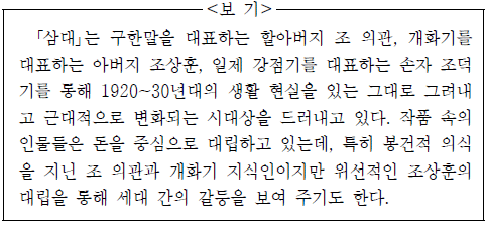
- ‘교육 사업’이나 ‘도서관 사업’을 강조하는 상훈의 모습에서 개화적 지식인으로서의 일면이 드러나는군.
- 조 의관이 신분을 사고 족보를 꾸미는 데 돈을 들인 것을 통해 조 의관의 봉건적 가치관이 드러나는군.
- 조 의관의 비난에 상훈이 변명하는 것을 보니, 상훈은 개화적 의식은 지녔지만 민족의 현실을 외면하는 인물이군.
- 상훈이 조 의관과 조상을 섬기는 일로 언쟁하는 것을 보니, 상훈은 조 의관의 가치관에 문제가 있다고 생각하는군.
- 조 의관이 재산의 반을 상훈이 아니라 덕기에게 상속하려는 것을 통해 돈을 중심으로 세대 간의 갈등이 나타났던 시대상을 엿볼 수 있군.
(정답률: 알수없음)
29. 윗글에 대한 이해로 적절하지 않은 것은?(39번 공통지문 문제)
- ‘추월’은 자신의 잘못을 스스로 깨닫고 이를 반성하고 있다.
- ‘호조 돈’은 춘풍과 추월이 호되게 매를 맞는 원인이 되고 있다.
- ‘감사’는 비장이 목표한 바를 이룰 수 있도록 도움을 주고 있었다.
- ‘춘풍’은 평양에서 만난 비장이 아내인 것을 경성에 돌아와서 알게 되었다.
- ‘비장’은 춘풍의 행동에 노여워하면서도 한편으로 그를 불쌍히 여기고 있다.
(정답률: 알수없음)
30. <보기>를 참고하여 윗글을 감상한 내용으로 적절하지 않은 것은? [3점](39번 공통지문 문제)
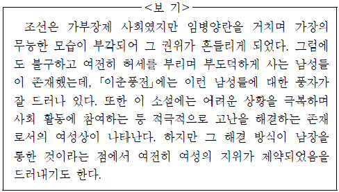
- 집안을 제대로 돌보지 않는 춘풍은 무능한 가장의 모습을 보여주고 있군.
- 기생인 추월에게 호조 돈을 탕진한 춘풍은 부도덕한 남성의 모습을 보여주고 있군.
- 아내가 남장을 하고 비장으로 일한 것은 여성이 남성과 동등한 사회적 지위에 올랐음을 의미하는 것이겠군.
- 경성으로 돌아와서도 허세를 부리는 춘풍은 아직도 가장으로서의 권위의식을 버리지 못하고 있는 것이겠군.
- 춘풍이 겪는 어려움을 아내가 해결해 준다는 점에서 아내는 적극적으로 문제를 해결하는 여성상을 보여주는 것이겠군.
(정답률: 알수없음)
31. ㉠의 상황을 가장 잘 드러낸 것은?(39번 공통지문 문제)
- 근묵자흑(近墨者黑)
- 백척간두(百尺竿頭)
- 설상가상(雪上加霜)
- 순망치한(脣亡齒寒)
- 일거양득(一擧兩得)
(정답률: 알수없음)
32. <보기>를 참고하여 윗글을 감상한 내용으로 적절하지 않은 것은? [3점](43번 공통지문 문제)
- ‘서러운 말’에는 남편으로부터 버림받은 화자의 운명과 처지에 대한 한이 담겨 있겠군.
- ‘스스로 참괴하니’를 통해 화자는 남편이 돌아오지 않는 상황에 대해 자신을 책망하고 있군.
- ‘천상의 견우직녀’는 임과 영원히 만날 수 없는 화자의 처지와 동일하다는 점에서 화자의 슬픔을 대변하고 있군.
- ‘나 같은 이 또 있을까’를 통해 화자는 홀로 지내는 자신의 외로움을 강조하고 있군.
- ‘아마도 이 임의 탓으로 살동말동 하여라’에는 남편을 원망하는 화자의 정서가 드러나 있군.
(정답률: 알수없음)
33. 윗글과 <보기>의 꿈에 대한 이해로 가장 적절한 것은?(43번 공통지문 문제)
- 대상에 대한 그리움이 바탕이 되어 있다.
- 화자의 내적 갈등이 발생하는 원인이 된다.
- 대상에 대한 비판 의식을 우회적으로 드러낸다.
- 화자와 대상이 서로의 처지를 이해하는 계기가 된다.
- 현실의 문제가 환상이라는 장치로 극복된 결과를 보여준다.
(정답률: 알수없음)